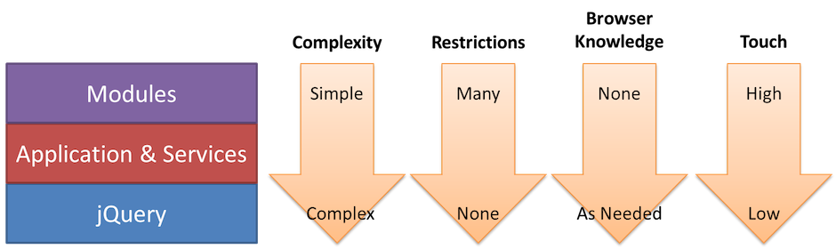

What is T3?
"Take 3" is a minimalist javascript framework that provides core structure to code. It defines the base set of components (services, modules, and behaviors) that help developers organize business and application logic while implicitly making code unit testable.
Goals
- Each component should be independently unit testable, even without other components available on the same web page.
- Each component must be able to be developed separately, potentially by separate teams in separate locations.
- Complexity should be pushed down into the stack as deep as possible. Modules should be very simple while the Base Library (jQuery) is typically quite complex.
- Limit the use of jQuery and encourage more native JavaScript usage.
- Make it difficult for developers to do the wrong thing (access or create globals, as one example).
Definitions
- Base - the combination of the Application and required services.
- Component - one part of the overall system. The Application, Module Context, each module, and each service are all considered components.
- Application - the object responsible for running the code on a page. It manages module registration and lifecycle as well as service registration. Once written, the Application rarely changes.
- Module - an independent unit of functionality in the system whose primary purpose is to monitor user interactions and respond accordingly. Modules can never interact directly with other modules. Modules may be allowed to access other types of components indirectly but never directly.
- Service -the primary extension mechanism. Services provide new capabilities to the Application or modules. Services are able to be swapped in and out so long as they adhere to certain interfaces. This is how the Application is able to extend and change over time. Services may interact with the Application and other services.
- Widget - a type of service encapsulates UI logic for a particular part of a page. Widgets generally don't know anything about the web application as a whole, only how to manage certain pieces of the page. Examples of widgets are menus, dialogs, and tabs.
- Utilities - a type of service that does not encapsulate UI logic. Examples of utilities are language parsers, Ajax wrappers, and string encoders.
- System - the combination of all components (Application, modules, and services).
Design

The most important part of the system is the Application, which manages everything else in the system. Its primary job is to manage services and modules, including module lifecycle. In this way, the Application is actually not responsible or aware of business logic, allowing it to be easily extended. Each service acts as a plugin for the Application, providing additional functionality such as a browser normalizing API. Services are utilities designed to be used by the system.
Modules provide the application logic (things that are unique to the Box web application versus other web applications) for the system by using the module infrastructure and optionally some services to perform their tasks. Modules must not know about one another in order to remain easily pluggable. Modules must also never access the Application directly. This allows the Application, and all services, to be swappable or even removed without requiring changes to modules. Modules must also never access global variables directly, as this makes it more difficult to recreate a suitable environment for unit testing. If a module needs access to a global object, it must request such access through Module Context (aka Sandbox).
This architecture is extensible in two ways: services extend the Application to provide more functionality and modules extend the system by providing more business logic. Doing so makes it easy to add new capabilities to the system without needing to rewrite from scratch. Additionally, this level of abstraction makes it easier to reliably test each component without needing the complete system to be present.
The arrows in the diagram represent the direction of communication between components. The Application and services can access the base library directly if necessary. The Application and Module Context communicate back and forth to one another. Modules can only communicate with Module Context.
Design Vectors
The architecture is designed with several vectors in mind. These vectors inform which functionality belongs in which part of the system and what each part of the system is allowed to do in order to accomplish its job.

The vectors are:
- Complexity - Modules are designed to be as simple as possible. The Application and services are more complex than that of the base library, jQuery, is the most complex part of the system.
- Restrictions - In order to enforce simplicity in modules, modules intentionally have a number of restrictions. It's important to prevent modules from doing too much in order to assure that they remain as simple as possible. Application and services can be more complicated but still abide by some rules. The base library, jQuery, plays by a completely different set of rules and is almost entirely abstracted away. This has an added benefit of allowing us to upgrade jQuery (or switch to another base library) without needing to double-check or upgrade multiple components.
- Browser Knowledge - Modules shouldn't need to know which browser is being used because their job is business logic and not browser normalization. Keeping browser-specific code out of this layer also enables us to swap or upgrade the base library without needing rewrite modules. jQuery’s primary job is browser normalization (secondary is syntactic sugar) and so it and any plug-ins must also know which browser is being used to provide consistent behavior across all browsers.
- Touch - Modules are considered the high touch area of the architecture. This is where we want most of the development to happen. Ensuring modules are the code that gets touched most frequently means that the most restrictions will be applied and lowers the likelihood of introducing problems. The Application object should not need to change that much (if at all), while services may change more frequently as new functionality is required for the system. The base library, jQuery, changes very infrequently.
Keeping these factors in mind allows you to determine where you should make additions to the system when needed.